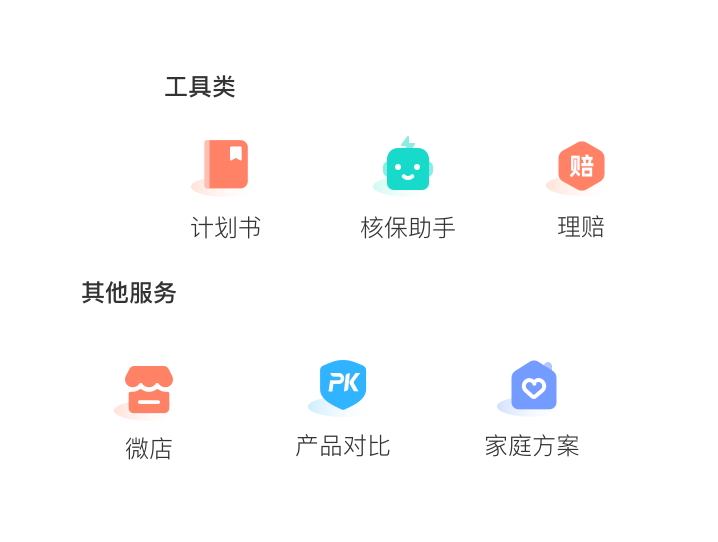
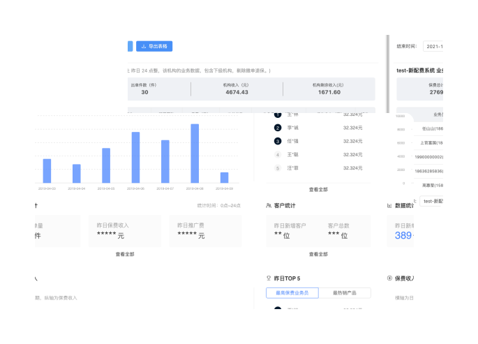
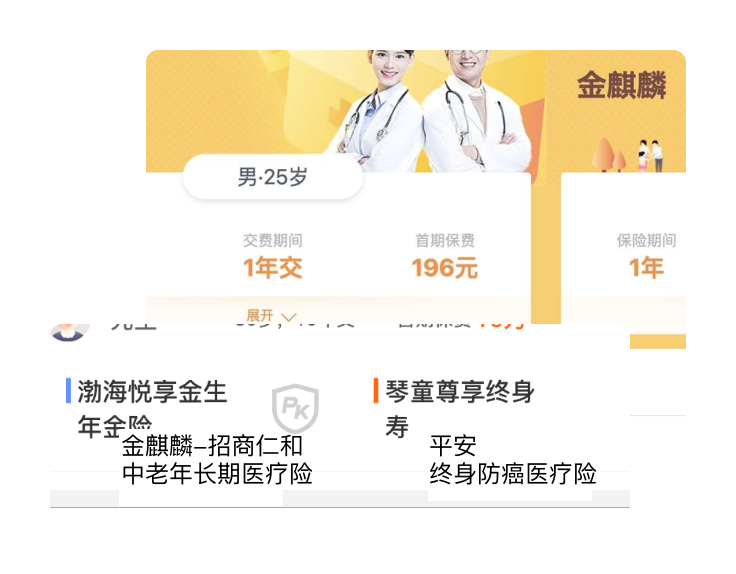
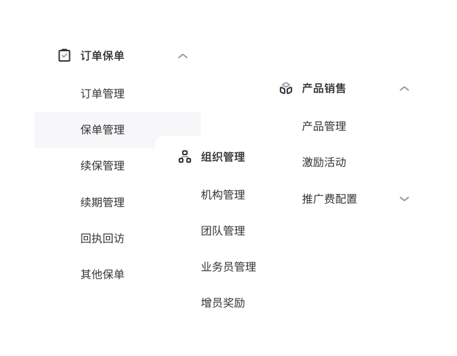
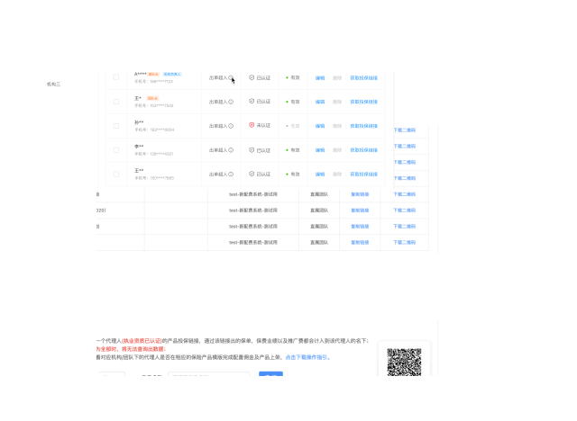
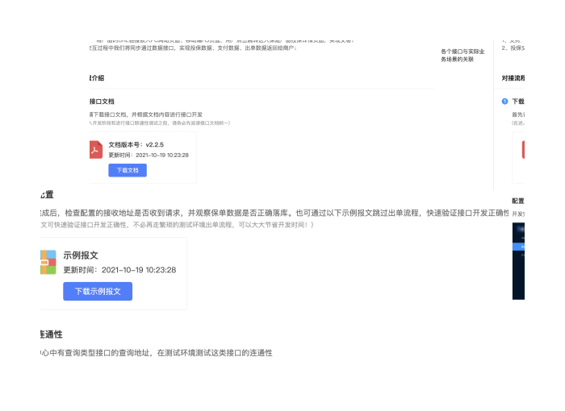
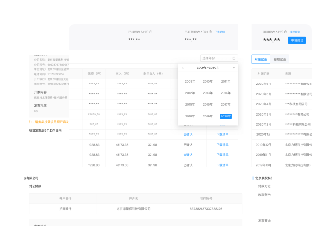

赋能代理人智能营销展业，并为经代机构管理层提供配套经营管理平台，实现组织发展-业务经营-财务结算的全流程数字化管理，强化机构智能化管理水平，助力其打造差异化竞争优势。
智能展业工具
集成保险交易转化所需的移动应用服务，提供一站式智能展业工具，大幅提升用户体验度，提高代理人成交效率。

数字化管理平台
面向保险经代机构管理层&内勤，配套经营管理平台，实现组织发展-业务经营-财务结算的全流程数字化、可视化管理，辅助核心管理人员实时掌握团队运营动态、高效决策。

客户成功服务
组建专业数字化保险运营团队，为经代机构提供销售培训、经营咨询、客服支持等非标准化运营实施服务，帮助客户灵活、轻量化的快速迭代业务。

全面覆盖互联网平台场景化、碎片化、多端化需求，助力平台精细化管理客户画像和销售过程，快速实现流量转化和业绩增长，建⽴完善的营销过程管理闭环。
智能营销平台
整合多渠道数据，构建千人千面的用户画像，从⽽精准定位目标受众，并基于客户特征智能推送个性化内容，全面提升用户价值，实现高效转化。

自定义模块组件
自由配置、快速搭建，低成本打造贴合业务场景需求的自定义应用系统。

专属推广链接
全平台个性化配置，生成专属商城链接、产品链接，实现千人千面的精准营销。

覆盖保险业务产销两端，助力合作保险公司打造高效“智能管理中台”，有效提升保险公司业务开展效率和创新业务竞争力，提升运营决策效率和风险管理水平，最大化产品价值。
开放平台数据对接
最小化接入成本搭建推广系统，支持实时数据获
取，全面掌控产品经营动态，减轻保险公司运营压力和成本支出。目前已实现100+保险公司产品灵活的参数设置，包括产品基本属性、产品规则、产品费率、产品责任和产品算法等。

财务结算管理
启用数字化财务服务，提供往来款项账务处理及查询统计，智能生成结算单，清晰掌握结算明细和状态。

全流程风险管控
打造与数字化保险业务相匹配的智能风控管理平台。利用第三方多维大数据，结合智能决策引擎、智能关联图谱和智能建模平台三大模块，形成风险控制闭环，有效解决保险机构在业务开展过程中的风险控制问题。目前已覆盖高佣套利风
险、渠道续期风险、集中退保风险、异常理赔风险、机构经验模式风险等多个风险场景。